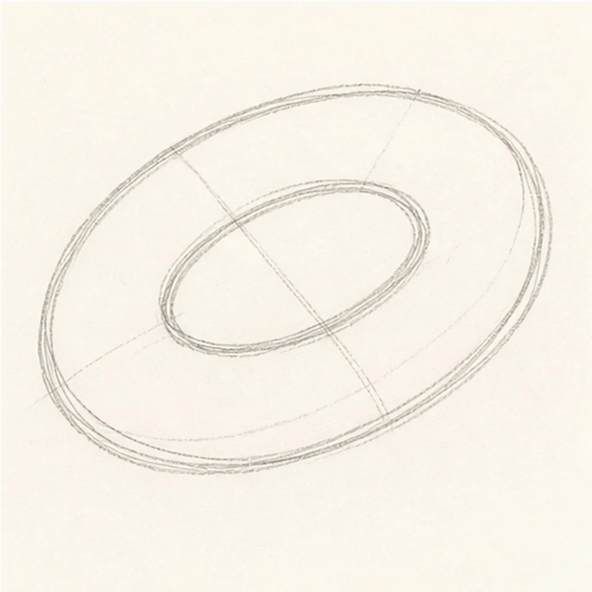
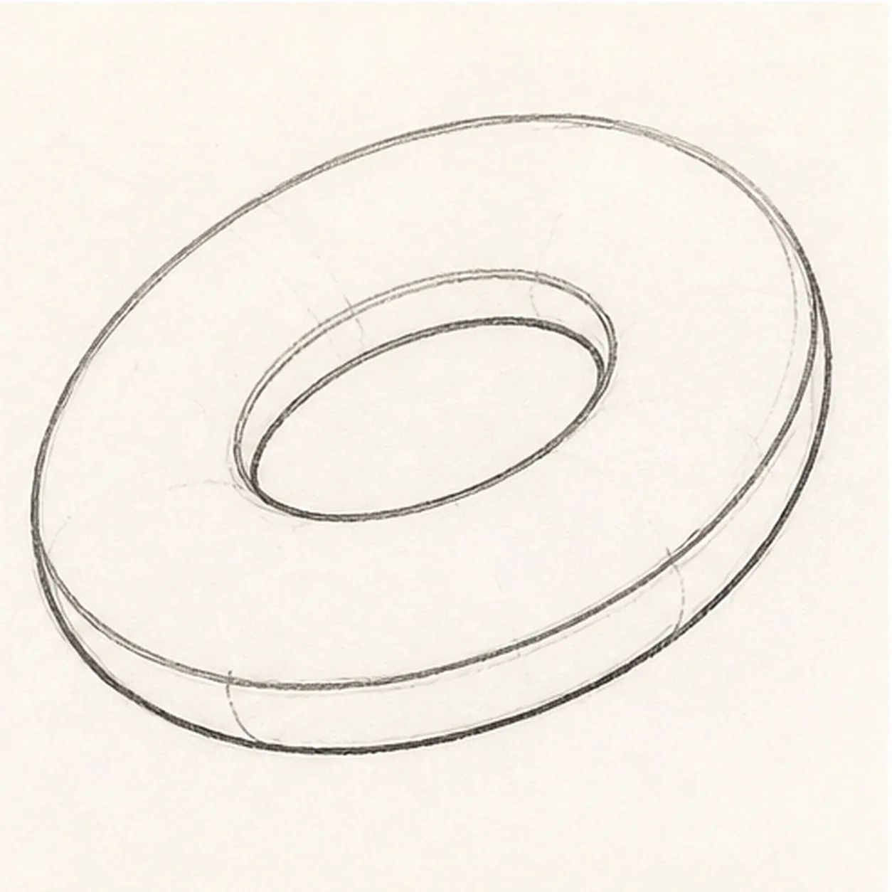
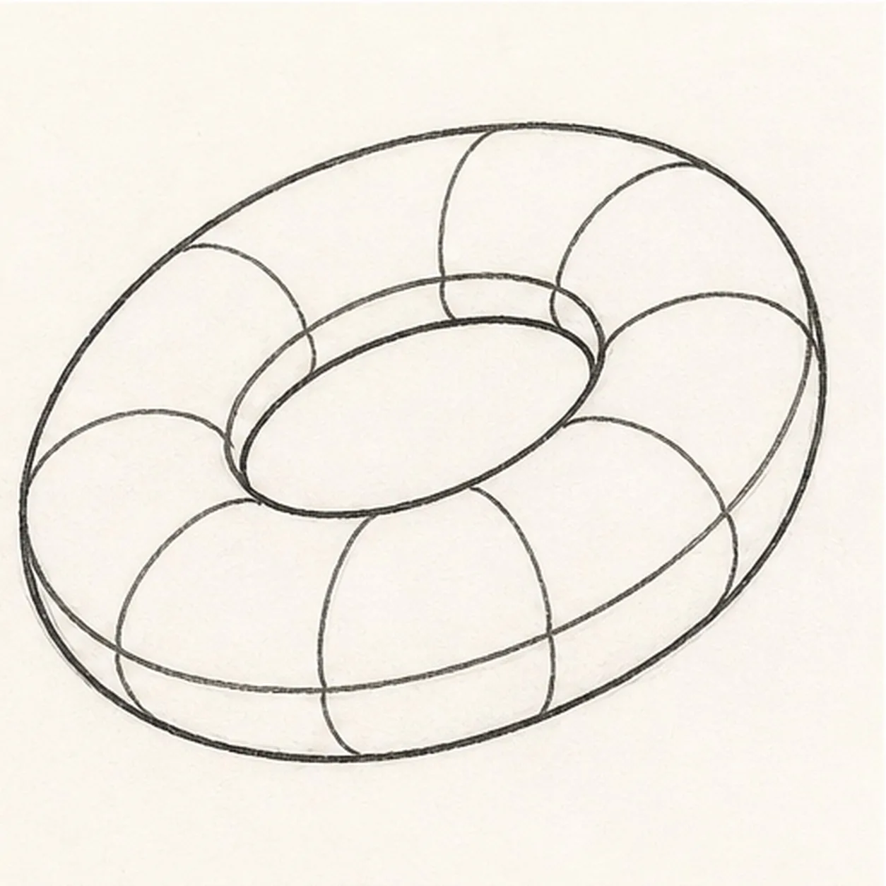
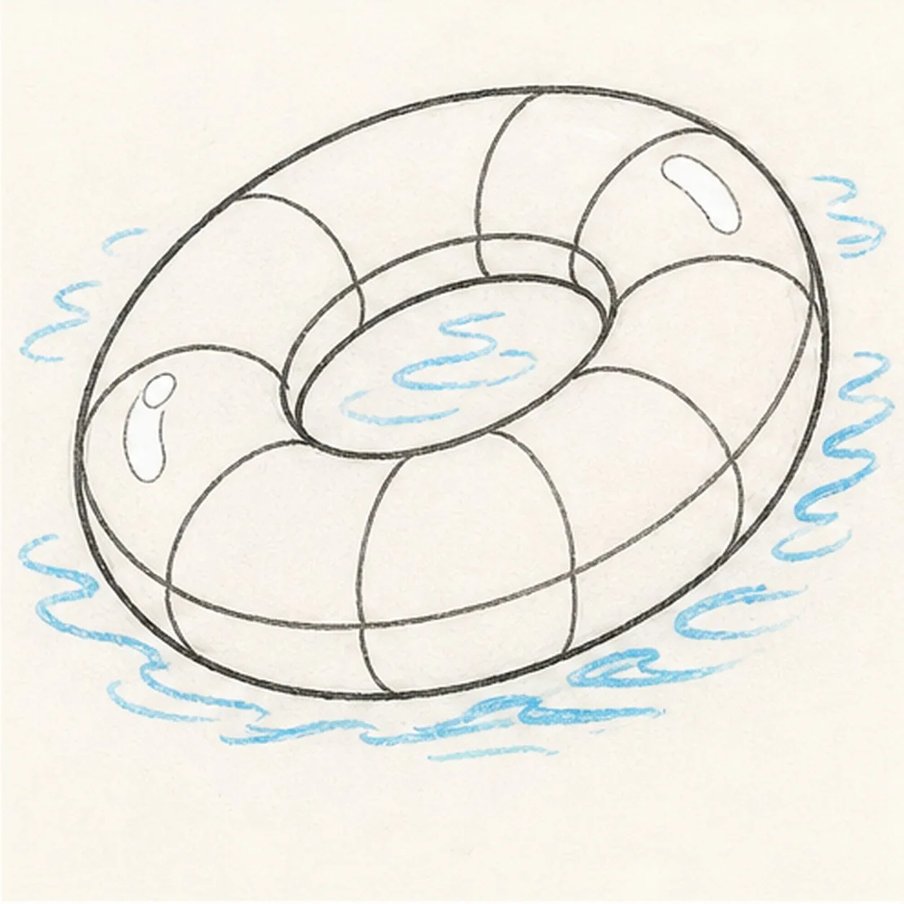
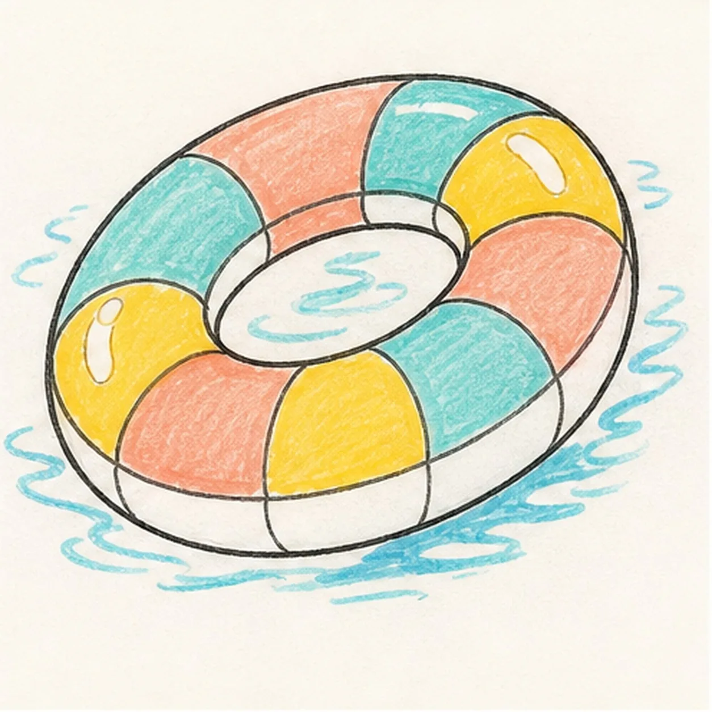

Felt-tip marker mode
Let's doodle a cartoon pool float
Treat this as one playful practice round: sketch the idea loosely, simplify the shapes, then commit with confident marker outlines and bright fills.
-
01

Block the float ring
Draw a large tilted ellipse for the outside of the float, then add a smaller matching ellipse for the hole.
Doodle tip: Match the tilt of both ellipses. The float looks inflated only if the hole follows the outer ring.
-
02

Inflate the edge
Add a soft lower edge around the ring so the float feels thick and puffy.
Doodle tip: Think of the float as a rounded tube, not a flat donut. The lower edge gives it volume.
-
03

Wrap the stripes
Divide the ring into curved stripe panels that follow the float's round surface.
Doodle tip: Curve each stripe across the tube. Straight cuts can make the float look like a flat target.
-
04

Add ripples and shine
Draw blue water ripples around the float and through the hole, then leave a few shine gaps on the tube.
Doodle tip: Place the shine gaps on the existing panels. They should not create new stripe shapes.
-
05

Fill the pool colors
Fill the stripe panels with aqua, coral, and yellow marker, then color the water ripples blue.
Doodle tip: Let marker streaks show. They help the inflated ring feel handmade and sunny.
-
06
Make the float bob
Thicken the black outlines, even the marker fills, sharpen the shine gaps, and clarify the same water ripples.
Doodle tip: Stop before adding faces, words, or beach props. The ring, stripes, shine, and water are enough.